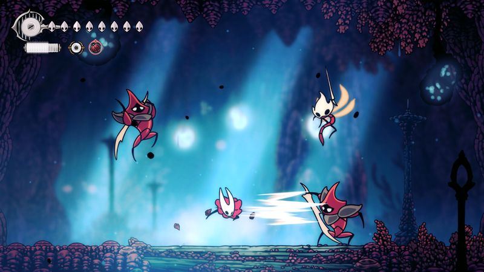
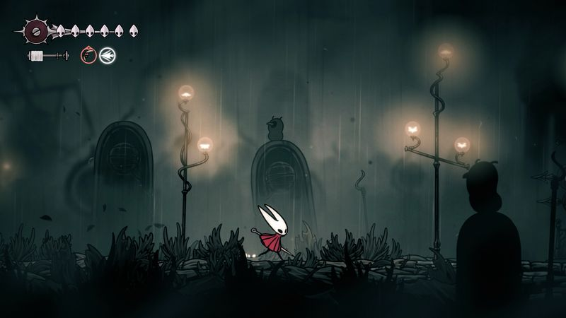

The thirty-second version
Worth it. Also cruel.
The wait was years. Our first boss took slightly longer.
Silksong turned up, drop-kicked us, and refused to apologise. It's a bigger, meaner, more musical follow-up to Hollow Knight, and the moment-to-moment combat is easily the best-feeling thing Team Cherry have ever made. It also assumes you enjoy being pattern-tested at 11pm, which we do, mostly.
Okay, what is this thing?
We waited so long for Silksong that one of our kids learned to read in the interim. Then it dropped, and by the end of the first evening we'd already died to something that made a haunting flute noise and taken it personally. The whole kingdom is drawn like a painted playbill and animated like it hates you a little. We adore it.
The core loop is Metroidvania in the classic sense: explore, get whipped, learn a new movement trick, go back to the room that whipped you and whip it. Hornet moves differently to the Knight; she's faster, more acrobatic, and a lot less forgiving on early enemies. The rewards for hanging in there are the same beautiful, patient discoveries we loved before, just harder to reach.


Why it escaped the group chat
- The direct sequel to Hollow Knight, arrived after a very long silence from Team Cherry.
- You play as Hornet, whose kit is quicker and more aerial than the original protagonist's.
- The setting is a haunted kingdom 'ruled by silk and song,' and the score matches the pitch.
Three dads enter
01
Dad Who Skipped the Tutorial
The first proper boss ate my dinner.
I don't enjoy being embarrassed. Silksong embarrassed me at the second real boss, so I went and played a farming game for a bit. I respect the craft. I also have bedtimes, and Silksong doesn't care about bedtimes. I'll come back. Maybe in a patch. Maybe in a week.
02
The Descent Guy
Every screen is a pattern-recognition puzzle I was born for.
I learned Hornet's dash timings in an evening and I've been unbearable ever since. Silksong is designed for players who read enemy animations like sheet music, and I was already fluent in the language from the first game. I'm happy. Nobody else is allowed near my save. I'm speedrunning bits I'm not supposed to have reached yet.
03
Normal-ish Dad
Magnificent. Also, be honest with your schedule.
This isn't a game you dip into for half an hour after work; it wants your full attention or it'll punish you politely. I love it, but I play it in longer stretches at weekends, when the kids are elsewhere. If your gaming windows are tiny, buffer this one for the school holidays.
Who it is for and what to watch
Invite these people
- Metroidvania sickos who wanted the sequel to be harder, not easier
- Anyone who owns a nice controller and wants to justify it
- People who miss the first Hollow Knight and are ready to bleed a bit
Dad caveats
- Difficulty is meaningfully harder than the original, especially early
- It expects long sessions to click; short bursts will feel punishing
- The soundtrack will follow you into the shower; consider yourself warned
Receipts
Two of us are deep into the mid-game on PC, one of us bounced off the second boss and is currently in denial about it. All on keyboard, which was a mistake for one of us.